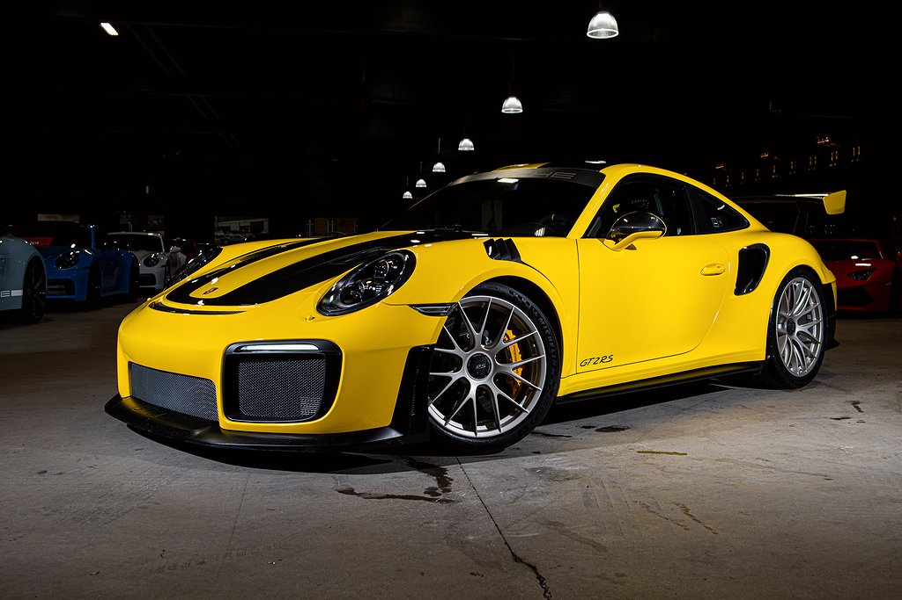

Beskrivning
Historiskt om du har velat göra en snabb Porsche snabbare så har man vänt sig till GT- avdelningen. En avstickare som började med rötter i Porsches egen motorsport avdelning med att tillverka bilar mer anpassade för ban- och aktiv körning. Pionärren här var 996 GT3 som var den första bilen i vad som har kommit att bli ett framgångs koncept för märket. Receptet var enkelt. Mindre vikt, ett uppdaterat chassi och lite mer effekt. Och det är ett etos man har hållit sig till i snart 25 år. Dagens GT3 är en bil med ganska stora skillnader från den bil som den är baserad på. Men för de som inte nöjer sig här då? Vad gör du när en GT3 inte är snabb nog? Det var förmodligen en av frågorna som ställdes tidigt 00-tal i ett möte med Porsches ledning. Personen som svarade att man borde ge Turbo-modellen samma behandling och där till ta bort de främre drivaxlarna var nog inte helt frisk men det är honom vi har att tacka för GT2.
Både 996 och 997 fick en GT2 variant, 997 fick till och med en RS variant. Båda iterationerna var ett välförtjänat rykte om att vara bilar som kräver sin förare. 2012, när produktionen av 997 GT2 RS avslutades trodde man att man kunde andas ut. Bilen lämnade 620hk till bakhjulen, detta måste väl ändå vara toppen av berget.... Första generationen av 991 kom och gick och ingen GT2 men lagom till slutet av modellen så dammade man åter igen av namnet och man sparade inte på krutet. 991.2 GT2 RS föddes i en kombination av kolfiber och magnesium med däck som specialtillverkades av Michelin för att ens ha en chans.
Att dela utrymme med denna bilen känns förmodligen som att stå i samma rum som en person som har en "tam" tiger. De medför vis respekt och en bra portion rädsla. Racing Yellow, som var den mest ovanliga kulören på bilen, täcker merparten av exteriören med både tak och huv lämnat delvis naket i kolfiber, front är mer formad av en törst för luft än något annat. Vingen i kolfiber sträcker sig över hela bakpartiet med två runda, väl tilltagna avgas i nerkant. 20 och 21" fälgar i magnesium skodda i Michelins Pilot Sport CUP 2R.
Att slå sig ner i förarstolen och knäppa in sig i sex-punkts bältena från Schroth medför ett inslag av hjärtklappning och en smula panik. Turbo ljudet är påtagligt så fort man vrider om tändningen. Bakom dig hittar du en magnesium bur och i nackstöden på kolfiber skalstolarna ett ganska diskret emblem som vittnar om vart bilen utvecklats. Weissach. Svensksåld bil med ringa 1450mil indikerat från ny och med en fin historik. Ta möjligheten att förvärva det absolut mest verklighets frånkopplade som lämnat Porsche fabriken i modern tid, med rätt spec och i rätt färg.
Porsche 911 991.1 GT2 RS
4,699,500kr